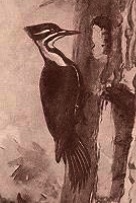
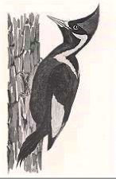

Math 300Z: In-class group activity
The Ivory-billed woodpecker has been thought to be extinct; the last known observation of one was in 1944. A new sighting in the Pearl River forest in Arkansas in 2004 became national news and excited efforts to confirm the sighting. These have not been successful and there is skepticism whether the reported 2004 sighting was correct. This is not an easy matter since the 2004 sighting was fleeting and the Ivory-billed woodpecker is very similar to a relatively common bird, the Pileated woodpecker.


Let’s imagine an experiment done to investigate the claim of an Ivory-billed sighting.
Null Hypothesis: It’s extinct.
Alternative Hypothesis: It isn’t extinct.
We need three numbers: - prior(H_a_) your previous state of belief about Ivory-billed not being extinct - Likelihood of the Alternative hypothesis: \({\cal L}_a(\text{obs})\) - Likelihood of the Null hypothesis: \({\cal L}_0(\text{obs})\)
How to find the likelihoods? An experiment was done using two different decoy birds.
- Bird decoys were flown by birdwatcher witnesses.
- Each witness reported what he or she saw using one of six choices.
The tabulated results:
| Observation | Code | Ivory-billed | Pileated |
|---|---|---|---|
| Short & Dull | A | 0.01 | 0.60 |
| Long & Dull | B | 0.10 | 0.13 |
| Short & Glossy | C | 0.04 | 0.20 |
| Long & Glossy | D | 0.60 | 0.05 |
| Short & White Back | E | 0.05 | 0.01 |
| Long & White Back | F | 0.20 | 0.01 |
Each of the numbers is a likelihood, e.g. 0.01 is the probability of observing Short & Dull given the bird was an Ivory-billed.
Probability-to-odds conversion formulas
\[\text{odds} = \frac{\text{prob}}{1-\text{prob}}\ \ \ \ \ \ \text{and}\ \ \ \ \ \ \text{prob} = \frac{\text{odds}}{1+\text{odds}}\]
Your group’s task
Part A Simulating a sighting
- Discuss what you think would be a reasonable prior probability for the Alternative hypothesis. Record this in two different formats:
- a probability
- an odds
- Simulation: Pick (at random or however) one of the six observation choices, e.g. Long & Dull
- Calculate the likelihood ratio for that observation
- Multiply the likelihood ratio by the prior odds. This gives you the posterior odds.
- Convert the posterior odds into a posterior probability.
Part B
- Find the kinds of observation that would give the most compelling argument that the sighting was really an Ivory-billed woodpecker.
Part C (after we’ve covered Null Hypothesis testing)
- Take the observation you selected in Part A and perform a Null hypothesis test. Do you reject or fail to reject the Null hypothesis?